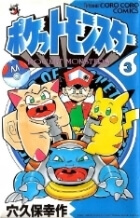

|
| Tên khác | PoKeMon Pippi |
| Tác giả | Đang cập nhật |
| Tình trạng | Đang tiến hành |
| Thể loại | Adventure-Comedy-Manga |
| Lượt xem | 140.968 |
| Nội dung | Hãy Like Fanpage để ủng hộ dịch giả nhéhttp://www.facebook.com/PkmLoverCốt truyện nói về 3 nhân vật chính là REd,PIKACHU,TOGÊPI và PIPPI .Đáng chú ý nhất là nhân vật PIPPI ,PIPPI là một con POKEMON (Mập,Tham ăn,Ngố và đặc biệt nữa là chuyên bày ra những trò "tai quái")Nhưng cũng chính vì những trò "tai quái" đó đã tạo nên nhiều tình hưống dở khóc dở cười trong suốt chuyến hành trình thu phục POKEMON của RED .còn RED là nhà huấn luyện POKEMON được giáo sư ÔKIĐÔ giao nhiệm vụ là đi thu phục toàn bộ POKEMON đối thủ của RED là GREEN cháu của giáo sư và cũng dc giao nv đi thu phục POKEMON .Còn PIKACHU là con POKEMON thông minh, lanh lợi, nổi tiếng cả trong chuyện lẫn ngoài đời là trợ thủ đắc lực của RED và là em họ của PIPPI(trong chuyện nói cậy chứ nhìn hai anh em chả giống nhau chút nào ) có tài phóng điện "Bách chiến,Bách thắng"(khác xa thằng anh họ của nó ).Tcả 3 con POKEMON:PIPPI,PIKACHU,TÔGÊPI đều là những trợ thủ của RED (nhưng chủ yếu là xoay quanh con PIPPI là nhiều) .Tuy hơi có những cảnh hơi tục nhưng truyện cực kì dzui. |
|